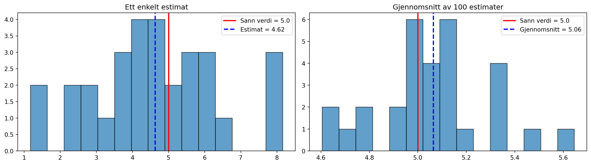
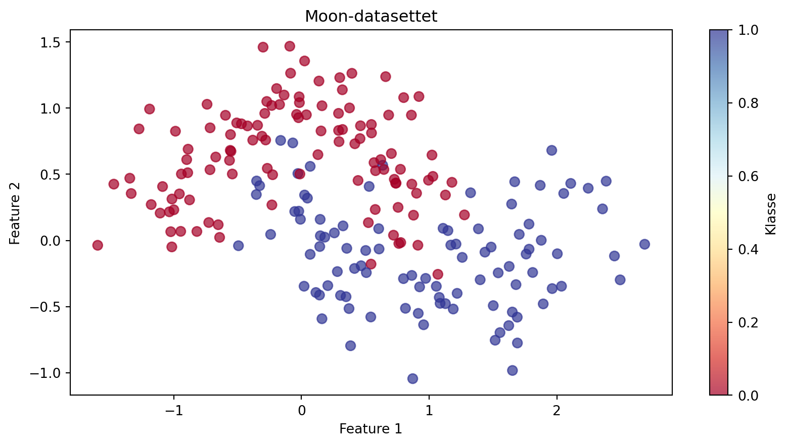
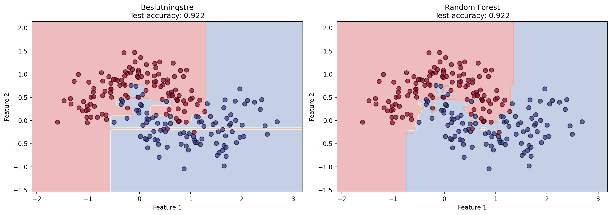
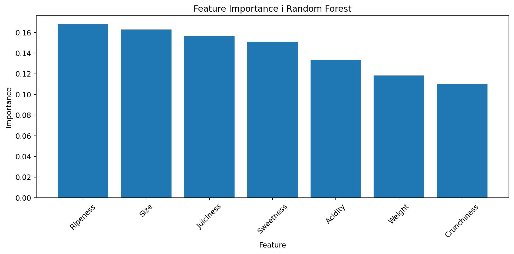
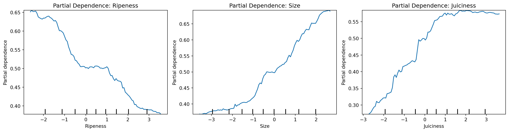
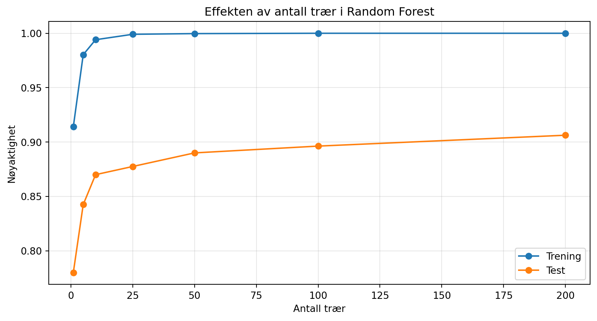

import numpy as np
import matplotlib.pyplot as plt
from sklearn.tree import DecisionTreeClassifier
from sklearn.ensemble import RandomForestClassifier
from sklearn.datasets import make_moons
from sklearn.model_selection import train_test_split
np.random.seed(42)Ensemble-metoder: Random Forest
LLM-skrevet supplement til HON2200
Dette notatet er skrevet av en LLM som supplement til forelesningsmateriell i HON2200.
Læringsmål
Etter å ha jobbet gjennom dette notatet skal du kunne:
- Forstå prinsippet bak ensemble-metoder
- Forstå hva bagging er og hvorfor det fungerer
- Bruke Random Forest til klassifisering og regresjon
- Tolke feature importance
- Bruke partial dependence plots
Motivasjon: Wisdom of the crowd
Har du noen gang sett på “Hvem vil bli millionær”? Deltakerne kan spørre publikum om hjelp - og publikum har ofte rett, selv om enkeltpersoner gjetter feil.
Dette er prinsippet bak ensemble-metoder: Mange svake prediktorer kan sammen bli en sterk prediktor.
Bagging: Bootstrap Aggregating
Bagging kombinerer mange modeller trent på litt forskjellige versjoner av dataene:
- Bootstrap: Trekk tilfeldige utvalg (med tilbakelegging) fra treningsdata
- Tren: Tren en modell på hvert bootstrap-utvalg
- Aggreger: Kombiner prediksjonene (gjennomsnitt for regresjon, avstemning for klassifisering)
Hvorfor fungerer dette?
# Demonstrere at gjennomsnittet av mange estimater er bedre enn ett
n_estimater = 100
n_observasjoner = 30
sann_verdi = 5.0
# Hvert estimat har støy
estimater = np.random.normal(sann_verdi, 2, (n_estimater, n_observasjoner))
# Gjennomsnittsestimat over alle estimatene
gjennomsnitt_estimater = estimater.mean(axis=0)
fig, axes = plt.subplots(1, 2, figsize=(14, 4))
# Enkelt estimat
ax = axes[0]
ax.hist(estimater[0], bins=15, edgecolor='black', alpha=0.7)
ax.axvline(sann_verdi, color='red', linewidth=2, label=f'Sann verdi = {sann_verdi}')
ax.axvline(estimater[0].mean(), color='blue', linewidth=2, linestyle='--',
label=f'Estimat = {estimater[0].mean():.2f}')
ax.set_title('Ett enkelt estimat')
ax.legend()
# Gjennomsnitt av mange estimater
ax = axes[1]
ax.hist(gjennomsnitt_estimater, bins=15, edgecolor='black', alpha=0.7)
ax.axvline(sann_verdi, color='red', linewidth=2, label=f'Sann verdi = {sann_verdi}')
ax.axvline(gjennomsnitt_estimater.mean(), color='blue', linewidth=2, linestyle='--',
label=f'Gjennomsnitt = {gjennomsnitt_estimater.mean():.2f}')
ax.set_title(f'Gjennomsnitt av {n_estimater} estimater')
ax.legend()
plt.tight_layout()
plt.show()
print(f"Standardavvik enkelt estimat: {estimater[0].std():.3f}")
print(f"Standardavvik gjennomsnittsestimat: {gjennomsnitt_estimater.std():.3f}")
Standardavvik enkelt estimat: 1.770
Standardavvik gjennomsnittsestimat: 0.229Random Forest
Random Forest er bagging med beslutningstrær, pluss en ekstra ingrediens:
Ved hver split i hvert tre, velger vi bare blant et tilfeldig utvalg av features.
Dette gjør trærne mer uavhengige av hverandre, som forbedrer ensemblet.
Eksempel: Moon-datasettet
# Generer moon-data
X, y = make_moons(n_samples=300, noise=0.25, random_state=42)
# Del i trening og test
X_train, X_test, y_train, y_test = train_test_split(X, y, test_size=0.3, random_state=42)
# Visualiser
plt.figure(figsize=(10, 5))
plt.scatter(X_train[:, 0], X_train[:, 1], c=y_train, cmap='RdYlBu', s=50, alpha=0.7)
plt.xlabel('Feature 1')
plt.ylabel('Feature 2')
plt.title('Moon-datasettet')
plt.colorbar(label='Klasse')
plt.show()
Sammenligne beslutningstre og Random Forest
# Tren begge modeller
tre = DecisionTreeClassifier(random_state=42)
tre.fit(X_train, y_train)
skog = RandomForestClassifier(n_estimators=100, random_state=42)
skog.fit(X_train, y_train)
# Lag grid for beslutningsgrenser
h = 0.02
x_min, x_max = X[:, 0].min() - 0.5, X[:, 0].max() + 0.5
y_min, y_max = X[:, 1].min() - 0.5, X[:, 1].max() + 0.5
xx, yy = np.meshgrid(np.arange(x_min, x_max, h),
np.arange(y_min, y_max, h))
fig, axes = plt.subplots(1, 2, figsize=(14, 5))
for i, (modell, navn) in enumerate([(tre, 'Beslutningstre'), (skog, 'Random Forest')]):
ax = axes[i]
Z = modell.predict(np.c_[xx.ravel(), yy.ravel()])
Z = Z.reshape(xx.shape)
ax.contourf(xx, yy, Z, alpha=0.3, cmap='RdYlBu')
ax.scatter(X_train[:, 0], X_train[:, 1], c=y_train, cmap='RdYlBu',
s=50, alpha=0.7, edgecolors='black')
accuracy = modell.score(X_test, y_test)
ax.set_title(f'{navn}\nTest accuracy: {accuracy:.3f}')
ax.set_xlabel('Feature 1')
ax.set_ylabel('Feature 2')
plt.tight_layout()
plt.show()
Et praktisk eksempel: Apple Quality
import pandas as pd
# Last inn data
df = pd.read_csv("../data/apple_quality.csv")
df = df.dropna()
print(df.head()) A_id Size Weight Sweetness Crunchiness Juiciness Ripeness \
0 0.0 -3.970049 -2.512336 5.346330 -1.012009 1.844900 0.329840
1 1.0 -1.195217 -2.839257 3.664059 1.588232 0.853286 0.867530
2 2.0 -0.292024 -1.351282 -1.738429 -0.342616 2.838636 -0.038033
3 3.0 -0.657196 -2.271627 1.324874 -0.097875 3.637970 -3.413761
4 4.0 1.364217 -1.296612 -0.384658 -0.553006 3.030874 -1.303849
Acidity Quality
0 -0.491590483 good
1 -0.722809367 good
2 2.621636473 bad
3 0.790723217 good
4 0.501984036 good # Forbered data
X = df[['Size', 'Weight', 'Sweetness', 'Crunchiness', 'Juiciness', 'Ripeness', 'Acidity']].values
y = (df['Quality'] == 'good').astype(int)
X_train, X_test, y_train, y_test = train_test_split(X, y, test_size=0.2, random_state=42)
# Tren Random Forest
rf = RandomForestClassifier(n_estimators=100, random_state=42)
rf.fit(X_train, y_train)
print(f"Treningsnøyaktighet: {rf.score(X_train, y_train):.3f}")
print(f"Testnøyaktighet: {rf.score(X_test, y_test):.3f}")Treningsnøyaktighet: 1.000
Testnøyaktighet: 0.896Feature Importance
En av de store fordelene med Random Forest er at vi kan se hvilke features som er viktigst:
# Hent feature importance
feature_names = ['Size', 'Weight', 'Sweetness', 'Crunchiness', 'Juiciness', 'Ripeness', 'Acidity']
importances = rf.feature_importances_
# Sorter
idx = np.argsort(importances)[::-1]
plt.figure(figsize=(10, 5))
plt.bar(range(len(importances)), importances[idx])
plt.xticks(range(len(importances)), [feature_names[i] for i in idx], rotation=45)
plt.xlabel('Feature')
plt.ylabel('Importance')
plt.title('Feature Importance i Random Forest')
plt.tight_layout()
plt.show()
Tolkning av feature importance
Feature importance viser hvor mye hver feature bidrar til å redusere “urenheten” (Gini-indeks) i trærne. Høyere verdi = viktigere feature.
Partial Dependence Plots
Feature importance forteller oss hvor viktig en feature er, men ikke hvordan den påvirker prediksjonen. Partial Dependence Plots (PDP) viser dette:
from sklearn.inspection import PartialDependenceDisplay
fig, axes = plt.subplots(1, 3, figsize=(15, 4))
# Velg de tre viktigste featurene
top_features = [idx[0], idx[1], idx[2]]
for i, feat_idx in enumerate(top_features):
PartialDependenceDisplay.from_estimator(
rf, X_train, [feat_idx],
feature_names=feature_names,
ax=axes[i]
)
axes[i].set_title(f'Partial Dependence: {feature_names[feat_idx]}')
plt.tight_layout()
plt.show()
Hvordan lese PDP: - X-aksen viser verdier av featuren - Y-aksen viser gjennomsnittlig effekt på prediksjonen - Stigende kurve = høyere verdi → høyere sannsynlighet for “good”
Hyperparametere i Random Forest
| Parameter | Beskrivelse | Typiske verdier |
|---|---|---|
n_estimators |
Antall trær | 100-500 |
max_depth |
Maksimal dybde per tre | None, 10-30 |
min_samples_split |
Minimum samples for split | 2-10 |
max_features |
Features per split | ‘sqrt’, ‘log2’ |
# Effekten av antall trær
n_trees_liste = [1, 5, 10, 25, 50, 100, 200]
train_scores = []
test_scores = []
for n_trees in n_trees_liste:
rf_temp = RandomForestClassifier(n_estimators=n_trees, random_state=42)
rf_temp.fit(X_train, y_train)
train_scores.append(rf_temp.score(X_train, y_train))
test_scores.append(rf_temp.score(X_test, y_test))
plt.figure(figsize=(10, 5))
plt.plot(n_trees_liste, train_scores, 'o-', label='Trening')
plt.plot(n_trees_liste, test_scores, 'o-', label='Test')
plt.xlabel('Antall trær')
plt.ylabel('Nøyaktighet')
plt.title('Effekten av antall trær i Random Forest')
plt.legend()
plt.grid(True, alpha=0.3)
plt.show()
Out-of-Bag (OOB) Score
Fordi hvert tre trenes på et bootstrap-utvalg, har vi “gratis” testdata - de observasjonene som ikke ble trukket. Dette kalles out-of-bag (OOB).
rf_oob = RandomForestClassifier(n_estimators=100, oob_score=True, random_state=42)
rf_oob.fit(X_train, y_train)
print(f"Test score: {rf_oob.score(X_test, y_test):.3f}")
print(f"OOB score: {rf_oob.oob_score_:.3f}")Test score: 0.896
OOB score: 0.871OOB-scoren gir oss et estimat på testfeil uten å måtte holde av data!
Oppsummering
| Begrep | Beskrivelse |
|---|---|
| Ensemble | Kombinere mange modeller |
| Bagging | Bootstrap + aggregering |
| Random Forest | Bagging med trær + tilfeldig feature-utvalg |
| Feature Importance | Hvor mye hver feature bidrar |
| Partial Dependence | Hvordan en feature påvirker prediksjonen |
| OOB Score | Test-estimat fra ikke-brukte samples |
Nøkkelfunksjoner
from sklearn.ensemble import RandomForestClassifier, RandomForestRegressor
from sklearn.inspection import PartialDependenceDisplay
# Klassifisering
rf = RandomForestClassifier(n_estimators=100)
rf.fit(X_train, y_train)
y_pred = rf.predict(X_test)
# Feature importance
importances = rf.feature_importances_
# Partial dependence
PartialDependenceDisplay.from_estimator(rf, X, [0, 1])
# OOB score
rf = RandomForestClassifier(oob_score=True)
rf.fit(X, y)
print(rf.oob_score_)Øvingsoppgaver
- Endre
max_depthi Random Forest. Hvordan påvirker det overtrening? - Sammenlign Random Forest med et enkelt beslutningstre på Apple Quality-datasettet
- Bruk kryssvalidering til å finne optimal
n_estimatorsogmax_depth - Lag PDP for alle features i Apple Quality og tolke resultatene